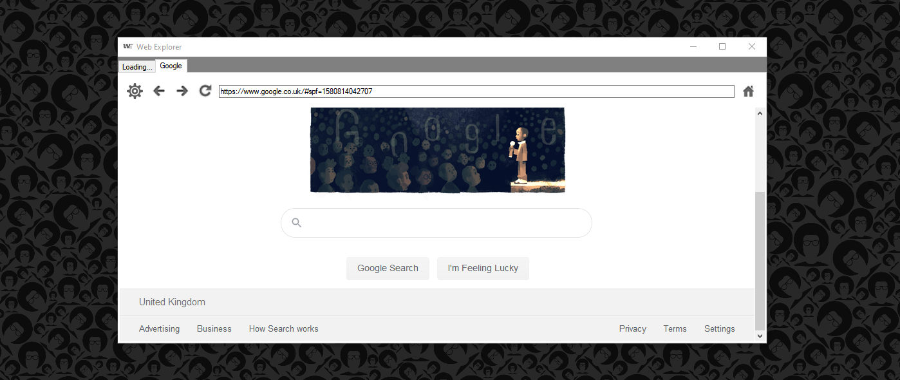
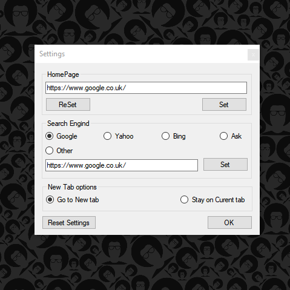
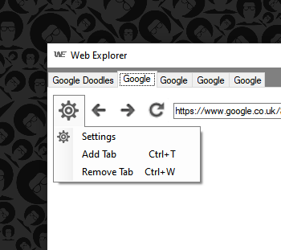

Web Expelorer


About
Web Explorer is a web browser with simple to use interface. Basic features include reload, go-back, go-forward and home button which will take you to your home page(can be set to any page you prefer in the settings). Furthermore in the setting dropdown(indicated with a gear icon). There are three options. Which are Remove Tab(short cut key[Ctrl+W]), New Tab(short cut key[Ctrl+T]) and Settings. The Settings will open up setting window, which can change the home page, default search engine and where you land after a new tab has been created.Web Explorer was designed and developed using VB.net, by Saman.K with the help of online tutorials.

try
WebControl1.Source = New Uri(SearchTB.Text)
Catch ex As System.UriFormatException
If SearchTB.Text.Contains("www.") Then
WebControl1.Source = New Uri("http://" + SearchTB.Text)
ElseIf Not SearchTB.Text.Contains("www.") Then
WebControl1.Source = New Uri("http://www." + SearchTB.Text)
End If
End Try
This code will run if an item in search has a top-level domain and it will add HTTP:// and WWW. to the search.
Web Explorer is at the final version and it will be developed no further. The browser engine has not been updated and it will not show some website.